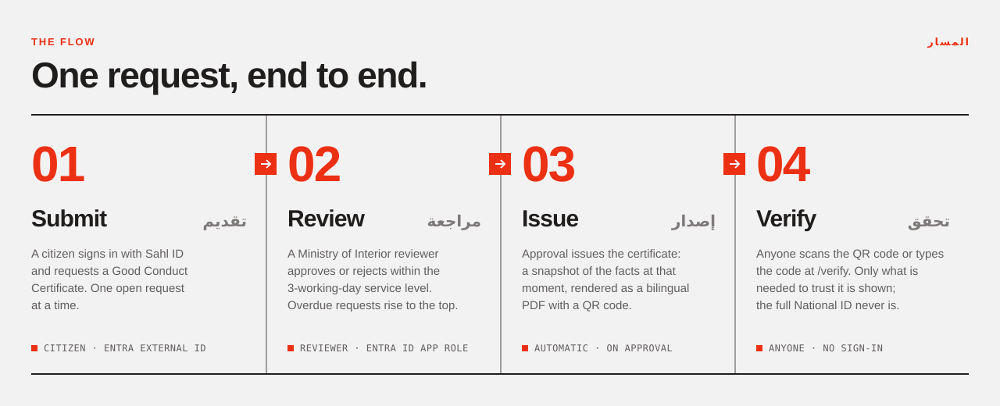
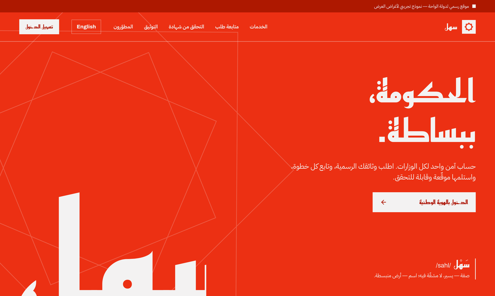
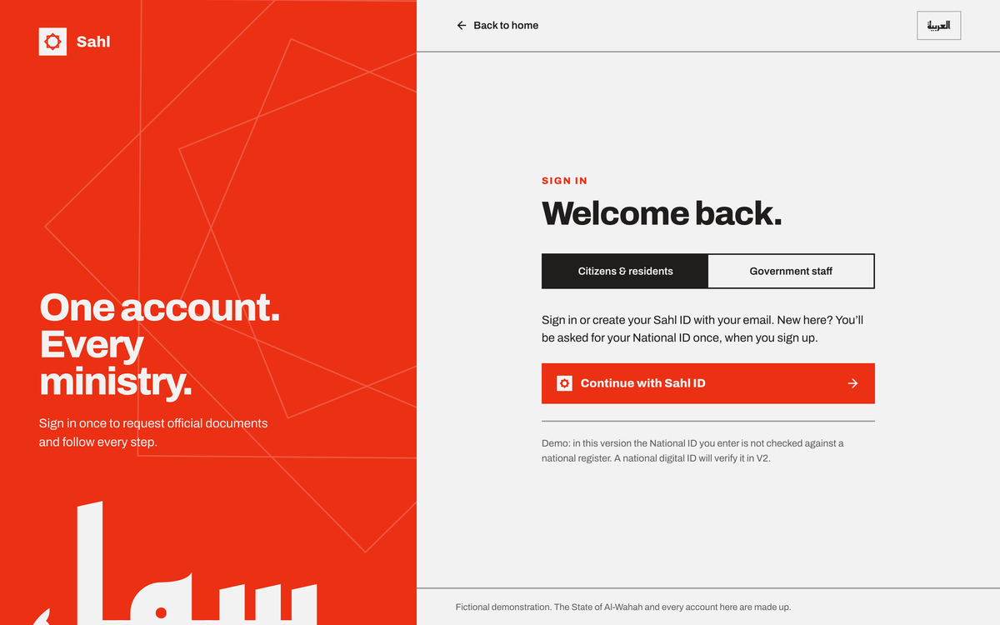
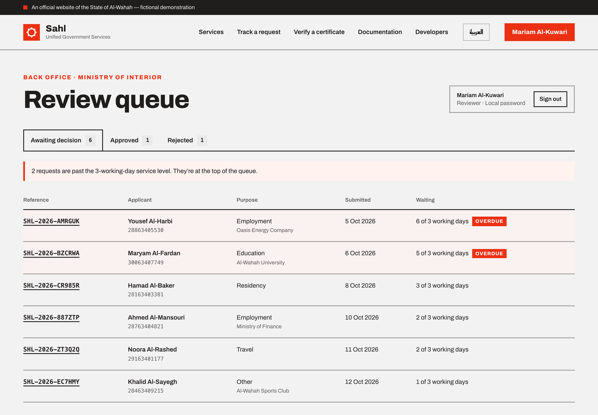
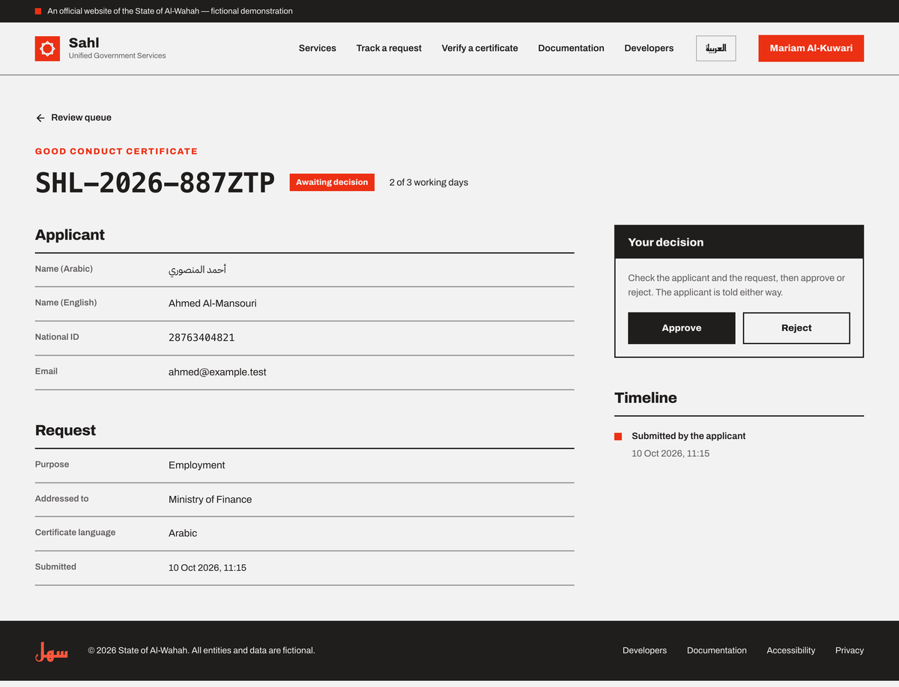
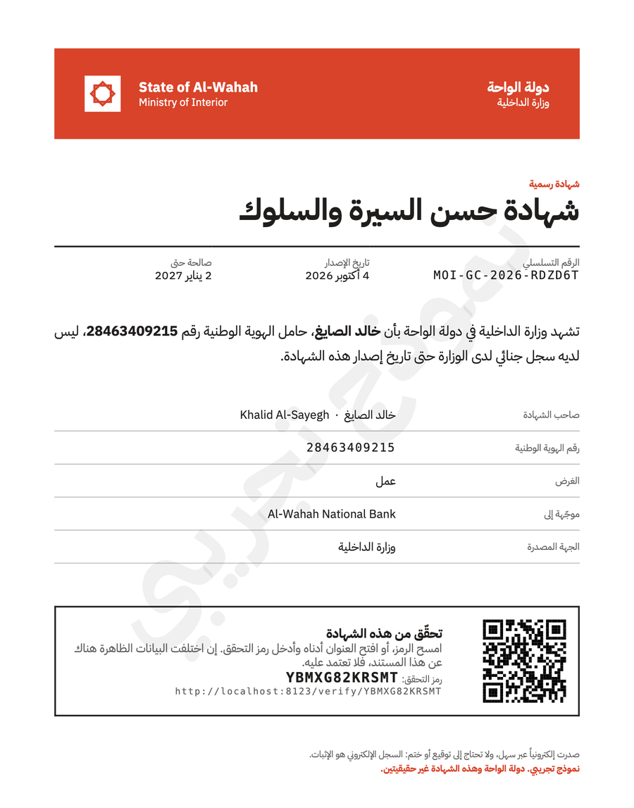
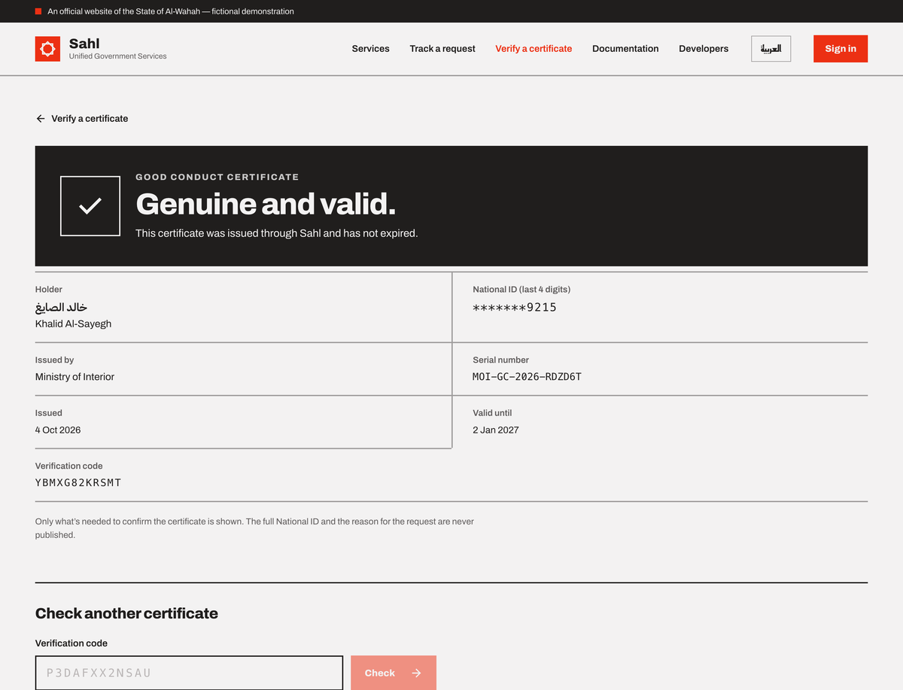
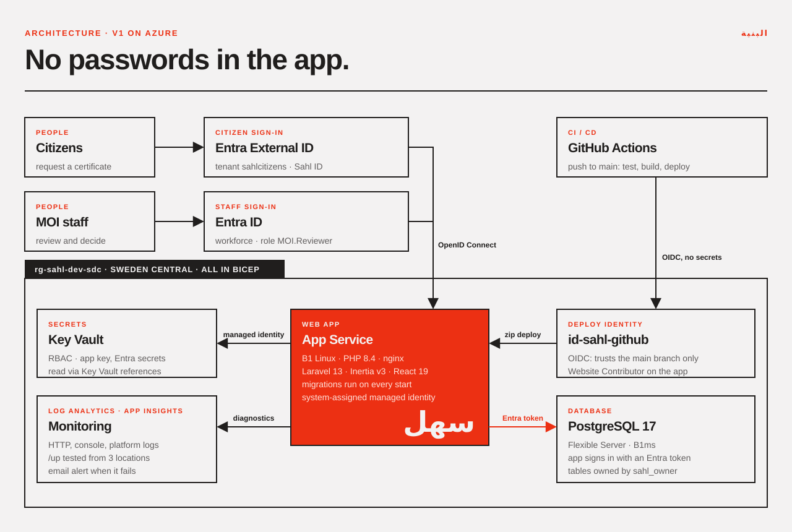
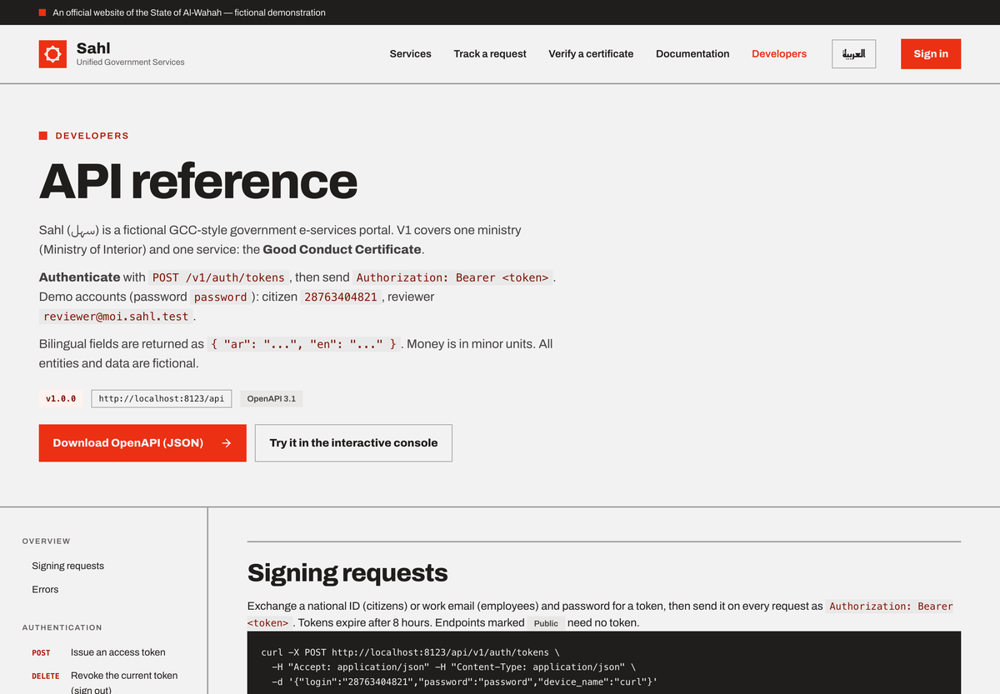

Sahl سهل
A government portal for a country that doesn't exist, built exactly as a real one should be. The app holds no passwords and CI holds no secrets, and anyone can verify the certificates it issues.
- Role
- Architect & sole engineer
- Year
- 2026
- Stack
- Laravel 13 · React 19 · Postgres 17
- Cloud
- Azure · Entra · Bicep
- Quality
- 139 Pest tests · OpenAPI
- Links
- Source ↗ · Live demo ↗
One ministry. One service. Done properly.
Sahl (سهل, "easy, effortless") is a GCC-style e-services portal for the fictional State of Al-Wahah. I deliberately kept V1 small: the Ministry of Interior issues a Good Conduct Certificate, and the whole path is built end to end, from the citizen's request, through staff review and issuing, to a public verification page.
I treated it as a system-architecture project, not a CRUD app. Every manual Azure and Entra step is written up in a setup guide, the whole environment is declared in infra/main.bicep, and a dated work journal records each decision as it was made.

Arabic first, right to left, one red.
Every screen is bilingual, with Arabic as the default. The layout mirrors using only logical CSS properties (ms-, pe-, start-), never left and right. The design system is strict modernism: Archivo, IBM Plex Sans Arabic and Reem Kufi; a single red, #ec3013; 2px rules; and no rounded corners.






Security is in the infrastructure, not added at the end.

01 · CINo secrets in CI
GitHub Actions signs in to Azure with OIDC. The deploy identity trusts only the main branch and can deploy only to this one web app.
02 · DATANo database password
The app signs in to Postgres as its own managed identity. A custom EntraPostgresConnector fetches a short-lived Entra token for each connection.
03 · ROLESLeast privilege
Tables belong to a group role, so the app, the admin and the owner can run migrations without needing server-admin rights.
04 · VAULTKey Vault references
The app key and Entra client secrets are resolved through Key Vault with Azure RBAC, not access policies.
05 · SHIPCode and schema together
Every deploy restarts the app and runs migrate --force --isolated at startup, so the code and the schema go live together.
06 · PRIVACY404, not 403
Other people's records return 404, so you can't even tell they exist. Request reasons are never published, and IDs are masked on public pages.
The website and the versioned JSON API share the same actions and rules, and the OpenAPI file is generated from the code.

/api/v1 with Sanctum tokens, documented in the app itself.A roadmap with real cloud services on it.
V1 live
MOI · Good Conduct, App Service, Postgres, Key Vault, OIDC, monitoring from 3 regions.
Tracing
An OpenTelemetry sidecar sending traces to Application Insights.
National ID
A mock digital ID federated into Entra External ID, so a National ID is verified instead of typed in.
Scale
More ministries, payments, Key Vault signing, API Management, Front Door, Service Bus.